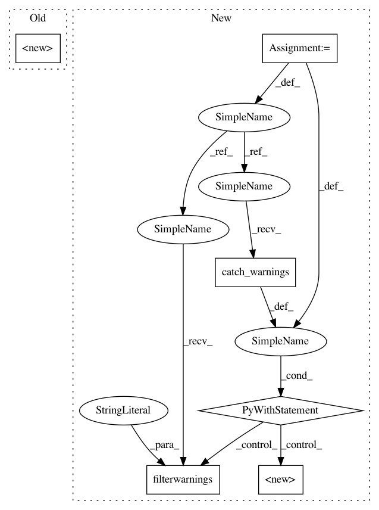

6bd4c10e3ceac82f3e4b218061666429ff5308fb,test/aqua/test_amplitude_estimation_circuitfactory.py,BernoulliQFactory,__init__,#BernoulliQFactory#Any#,62
Before Change
def __init__(self, bernoulli_expected_value):
super().__init__(bernoulli_expected_value, i_objective=0)
def build(self, qc, q, q_ancillas=None, params=None):
i_state = self.a_factory.i_state
theta_p = self.a_factory._theta_p
After Change
def __init__(self, bernoulli_expected_value):
with warnings.catch_warnings():
warnings.filterwarnings("ignore", category=DeprecationWarning)
super().__init__(bernoulli_expected_value, i_objective=0)
def build(self, qc, q, q_ancillas=None, params=None):
i_state = self.a_factory.i_state
theta_p = self.a_factory._theta_p
// Q is a rotation of angle 2*theta_p around the Y-axis
In pattern: SUPERPATTERN
Frequency: 5
Non-data size: 6
Instances
Project Name: Qiskit/qiskit-aqua
Commit Name: 6bd4c10e3ceac82f3e4b218061666429ff5308fb
Time: 2020-10-15
Author: jules.gacon@googlemail.com
File Name: test/aqua/test_amplitude_estimation_circuitfactory.py
Class Name: BernoulliQFactory
Method Name: __init__
Project Name: Qiskit/qiskit-aqua
Commit Name: 6bd4c10e3ceac82f3e4b218061666429ff5308fb
Time: 2020-10-15
Author: jules.gacon@googlemail.com
File Name: test/aqua/test_amplitude_estimation_circuitfactory.py
Class Name: BernoulliAFactory
Method Name: __init__
Project Name: Qiskit/qiskit-aqua
Commit Name: 6bd4c10e3ceac82f3e4b218061666429ff5308fb
Time: 2020-10-15
Author: jules.gacon@googlemail.com
File Name: qiskit/aqua/components/uncertainty_problems/uncertainty_problem.py
Class Name: UncertaintyProblem
Method Name: __init__
Project Name: Qiskit/qiskit-aqua
Commit Name: 6bd4c10e3ceac82f3e4b218061666429ff5308fb
Time: 2020-10-15
Author: jules.gacon@googlemail.com
File Name: test/aqua/test_amplitude_estimation_circuitfactory.py
Class Name: SineIntegralAFactory
Method Name: __init__
Project Name: Qiskit/qiskit-aqua
Commit Name: 0b032b60de4ec87e5c8b6f8421989f7341446ee3
Time: 2020-11-23
Author: gaconju@gmail.com
File Name: qiskit/aqua/components/feature_maps/raw_feature_vector.py
Class Name: RawFeatureVector
Method Name: __init__